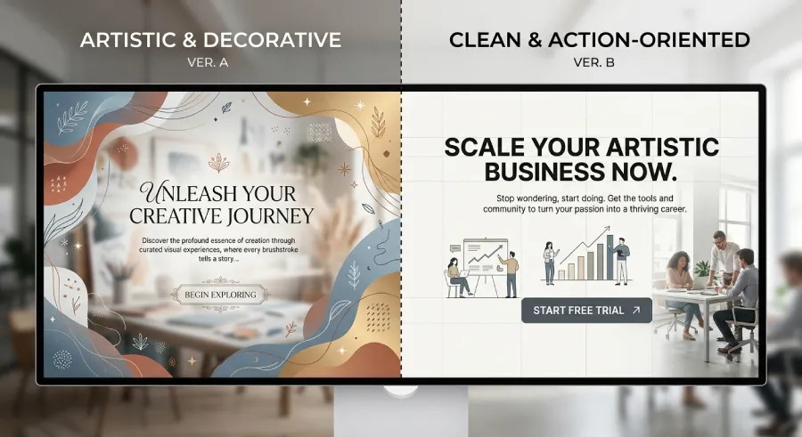

Someone shows you a website and you think, "wow, that's beautiful." Then you find out it barely generates a handful of inquiries a month. It's not a rare occurrence. It might actually be the norm.
Aesthetics and results are not the same thing. They can overlap, but one doesn't cause the other. And the more those two ideas get confused, the easier it becomes to spend time and money on things that don't actually bring in clients.
Design Wasn't Built to Impress You
When a professional looks at their own website, they see it through a different lens than the visitor does. They already know what they do, they know the story behind every decision, they feel pride in the result. That's completely natural, but it's also a trap.
The visitor has none of that context. They don't care whether the typeface is premium or whether the color palette follows sound color theory. They care about one thing: whether this website is going to help them solve whatever brought them there in the first place. A site can be visually stunning and fail at that completely.
Where the Balance Usually Breaks
There are three specific places where a "beautiful" site typically loses the plot, without anyone realizing it until the numbers come in.
The Message Gets Sacrificed for the Form
An impressive animation, a highly artistic layout, or a minimalist design with generous white space can look stunning in a portfolio. But if the visitor has to hunt for what you actually do, the design isn't serving its purpose. It's serving itself.

Speed Gets Sacrificed for Detail
Large background videos, multiple scroll effects, high-resolution photos with no optimization. All of it looks impressive in a presentation, but it costs seconds of load time. And as we've said before, those seconds cost you visitors who won't wait around to see how nice it looks.
The Call to Action Gets Lost in the Aesthetic
A site designed to look artistic often avoids bold, obvious buttons because they "break" the aesthetic. The result is a visitor who's been convinced, but doesn't know where to click to take the next step.
Design That Actually Sells Looks Different
A website that brings in clients doesn't need to be ugly, quite the opposite. But every choice in it serves a purpose, not just an impression. The hierarchy on the first screen is clear. The call-to-action button stands out immediately. Load speed is a priority, not an afterthought. And every section answers a specific question the visitor actually has, instead of existing simply because it "looks good."
This doesn't mean less care goes into the aesthetics. It means the aesthetics serve the goal, not the other way around.
How to Tell the Two Apart in Practice
The test is simple. For every element on your site, ask: if I removed this, would the visitor understand less about what I do, or would they just see something less impressive?
If the answer is "they'd understand less," that element is serving its purpose. If the answer is "it would just look less impressive," then that element exists for your own satisfaction, not the visitor's. It's not necessarily wrong to keep it, but you need to know what role it's playing, and not let it take priority over the things that actually drive results.
The Bottom Line
A website doesn't have to choose between beautiful and effective. It only has to know which one comes first whenever a choice has to be made.
The question isn't whether your website is beautiful. It's whether your website makes the visitor understand, trust, and move forward. When that happens, the site usually looks beautiful too, because clarity is its own form of beauty. The reverse, though, isn't always true.
Want a website that's not just beautiful, but actually converts?
At Evida Studio, every design decision passes through one question: does this help your client take the next step, or does it just look good?
Let's Talk About Your Project